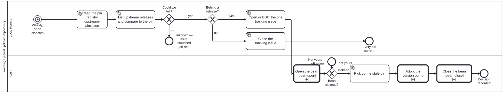

Generated from
cat-harness/processes/sdlc/upstream-pin-watch.bpmnbygen-processes-viz.ts— do not edit here. All processes
Process_UpstreamPinWatch · strict · 6 step(s)
Has a pinned upstream dependency fallen behind a release: check each pin, keep one tracking issue, and enter the adoption subprocess for each dependency that is behind. THE WATCHER’S DISPATCH POINT, drawn rather than described. Bean 29ij records the rule this follows: a watcher fires on specific events, and those events are process events — they belong in a diagram, not in prose that no tool reads.
Everything up to the tracking issue is MECHANICAL and sits in a system lane: read the registry, list upstream’s releases, compare, and maintain ONE issue. No step here exercises judgement, which is what makes build-pipeline the correct lane rather than a convenient one.
Three outcomes and the middle one is the point. Current closes the issue; behind opens or edits it; COULD NOT TELL leaves the issue exactly as it is and fails the job, because a watchdog that has gone blind must not read as good news — check-ci-health.ts’s rule, and the reason this repository has a watchdog at all.
The adoption itself is a call activity, so the judgement half lives in its own reusable process and this one stays free of it.

| lane | role | what it does here |
|---|---|---|
| CI/CD Pipeline | build-pipeline |
Owns exactly three outcomes and must keep them visibly different: current closes the tracking issue, behind opens or edits it, and UNKNOWN leaves the issue untouched while failing the job anyway — a watchdog that goes blind must never read as clean, so this lane is the one place that distinction cannot be collapsed into a single pass or fail. It hands off at the first sign of judgement: the moment a bump needs adopting, that is Lane_Agent’s, never this one’s. |
| Agent | authoring-agent |
Entered only once Lane_Ci has confirmed a pin is behind and filed the issue, never to make that determination itself: A_PickUp’s claim is what stops two sessions adopting the same bump. The judgement of adoption is not drawn here either — Call_Adopt hands it to its own reusable process, so this lane is only the hand-off from mechanical detection to judgement, not the judgement itself. |
Every one of the 6 step(s) is documented.
| step | lane | skill / sub-process | what it does |
|---|---|---|---|
Read the pin registry upstream-pins.jsonTask_ReadPins |
CI/CD Pipeline | upstream-version-adoption |
The registry lists the tenants and says, per row, WHICH FILE holds the pin literal and how to read it. It deliberately does not store the version: one answer to “what are we running”, read from the file the build reads. |
List upstream releases and compare to the pinTask_QueryUpstream |
CI/CD Pipeline | upstream-version-adoption |
git ls-remote --tags, filtered by the row’s tagPattern and ordered by version. Nothing is cloned and no API token is needed, so the check runs the same way on a laptop and in CI. |
Close the tracking issueTask_CloseIssue |
CI/CD Pipeline | upstream-version-adoption |
Closed automatically when every pin is current, so the issue’s existence is the state rather than a log of past states. |
Open or EDIT the one tracking issueTask_TrackIssue |
CI/CD Pipeline | upstream-version-adoption |
One issue, edited in place. GitHub’s own failure mail is the channel that was already ignored thirty times, so this adds none: an edit does not notify, and a pin that stays behind for two months stays one unread item rather than nine. |
Pick up the stale pin claim a beanA_PickUp |
Agent | upstream-version-adoption |
The hand-off from the mechanical lane to the one that can exercise judgement. Claiming the bean here is what stops two sessions adopting the same bump. |
Adopt the version bumpCall_Adopt |
Agent | calls Adopting an upstream version bumpupstream-version-adoption |
The reusable subprocess. Every pinned dependency enters it the same way, so a new tenant is a registry row and a call — never a second diagram saying the same thing in different words. |
Every one of the 2 decision(s) is documented.
| decision | what decides it | branches |
|---|---|---|
Could we tell?GW_Determined |
Asked of the verdict output of ‘Check the pins’ in .github/workflows/upstream-pins.yml, which runs check:upstream-pins --out. Exit 0 is every pin current, 1 at least one behind, 2 could not tell; an exit 1 with no report file is a crash and is reclassified as could-not-tell, as is any other code. no is verdict == ‘unknown’: ‘Refuse to report success on an undetermined pin’ runs exit 1 and the tracking issue is left untouched. yes is verdict != ‘unknown’, the guard on ensuring the upstream-pin label. |
no → Unknown — issue untouched, job red yes → Behind a release? |
Behind a release?GW_Stale |
Asked of the same verdict. no is verdict == ‘current’: the tracking issue is closed because every pin is current. yes is verdict == ‘behind’: the one tracking issue is opened or edited in place. |
no → Close the tracking issue yes → Open or EDIT the one tracking issue |